Registra los avisos de tu banco en tu iPhone
Hay tres maneras de que un aviso de tu banco se vuelva un movimiento en TrackExpenses: pegarlo, que funciona con cualquier banco; una automatización de correo, si tu banco te avisa por correo; y una automatización de Mensajes, si te manda SMS. Esta guía explica cuál te conviene y configura la de SMS paso a paso, con imágenes de Atajos en español.
Primero: ¿cómo te avisa tu banco?
Ninguna automatización del iPhone puede leer las notificaciones de otra app, y en México y casi toda Latinoamérica es así como avisan la mayoría de los bancos. Fíjate en tus últimos avisos. Tu banco te avisa…
- Con una notificación de su app (Nu, Mercado Pago, Nequi, Yape, Plin, Ualá): la notificación no se puede copiar; pega el detalle del movimiento si la app de tu banco te deja copiarlo, o di la compra por voz.
- Con un correo por cada compra (la mayoría de los bancos de Chile, BCP, Interbank, Galicia): usa la automatización de correo.
- Con un SMS (Bancolombia, Banco de Occidente, BBVA México, Banorte, Santander Río): usa la automatización de esta guía.
Si pagas con Apple Pay, Atajos también tiene el activador “Wallet”: se ejecuta con cada compra y la acción “Importar movimiento de Wallet” la registra. Los pasos están en la app, en “Más” → “Registro automático de SMS” → “Importar también compras con Apple Pay”. Si tu banco también te manda un SMS por esas compras, usa un solo camino por tarjeta, o cada compra llegará dos veces.
Pegar un aviso
Copia el texto del aviso: del SMS, del correo o del detalle del movimiento en la app de tu banco. Abre un gasto nuevo en TrackExpenses y toca “Pegar”. El monto, el comercio, la fecha y la tarjeta se llenan solos, y tú revisas antes de guardar. Si la tarjeta del aviso termina igual que una de tus cuentas, el movimiento va a esa cuenta, y la categoría sale de lo que registraste antes en ese comercio.
Al pegar, la app también lee lo que una automatización deja pasar sin registrar, como una devolución o una compra cancelada, porque tú estás viendo el resultado antes de guardar.
Lo que necesitas para la automatización
- Un iPhone con iOS 17 o posterior y la app Atajos de Apple.
- TrackExpenses en el mismo iPhone.
- Un banco que te mande un SMS por cada movimiento.
Las imágenes de esta guía son de iOS 27. En iOS 26 y versiones anteriores las pantallas se ven distintas y algunos pasos cambian; los pasos para tu versión están en la app, en “Más” → “Registro automático de SMS”.
Elige la palabra del filtro
La automatización solo se ejecuta con los mensajes que contienen el texto que tú eliges. Usa la marca que tu banco escribe junto a cada monto: $ en México, Colombia, Argentina y Chile, y S/ en Perú. Aparece en compras, retiros y depósitos, y casi nunca en tus mensajes personales. No elijas un remitente: los bancos cambian de número corto de vez en cuando, y un filtro por remitente dejaría de funcionar sin avisarte.
La configuración paso a paso
Estos 18 pasos se hacen una sola vez, en unos minutos.
Empieza en la Biblioteca
Abre Atajos. Vuelve a “Biblioteca” y elige “Automatización”.
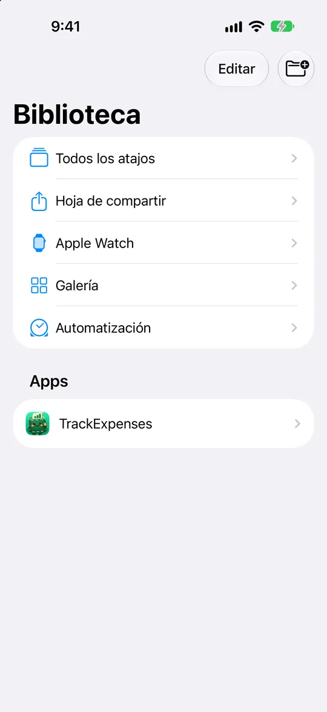
Crea un atajo nuevo
Toca el + de abajo. En iOS 27, las automatizaciones están dentro de los atajos.
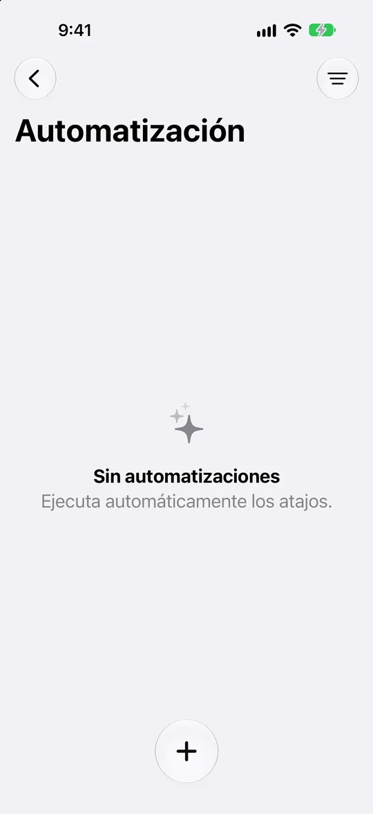
Abre el editor
Si se abre “Describir un atajo”, toca “Editor” o “Editar”. Luego toca “Automatización” en el panel de acciones.
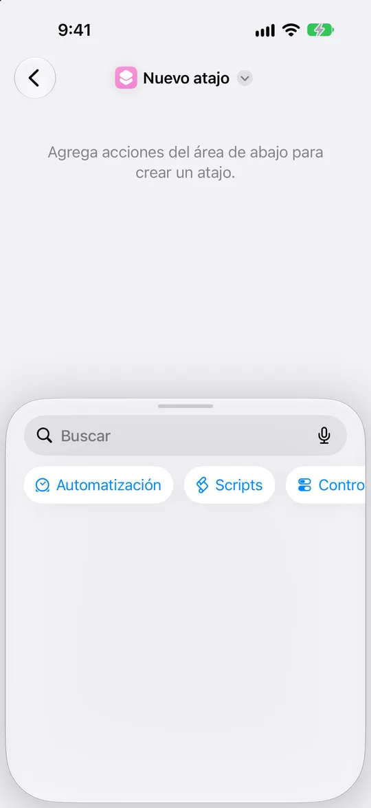
Elige “Mensaje”
En “Comunicación”, toca “Mensaje” para agregar el activador de mensajes entrantes.
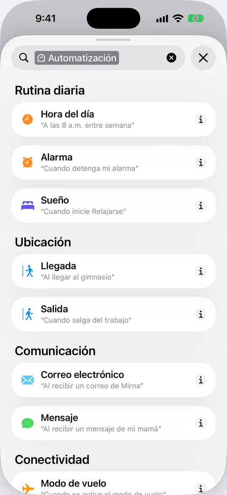
Cambia el campo del filtro
Toca el primer campo azul “Remitente”. Aquí eliges qué parte del mensaje se compara.
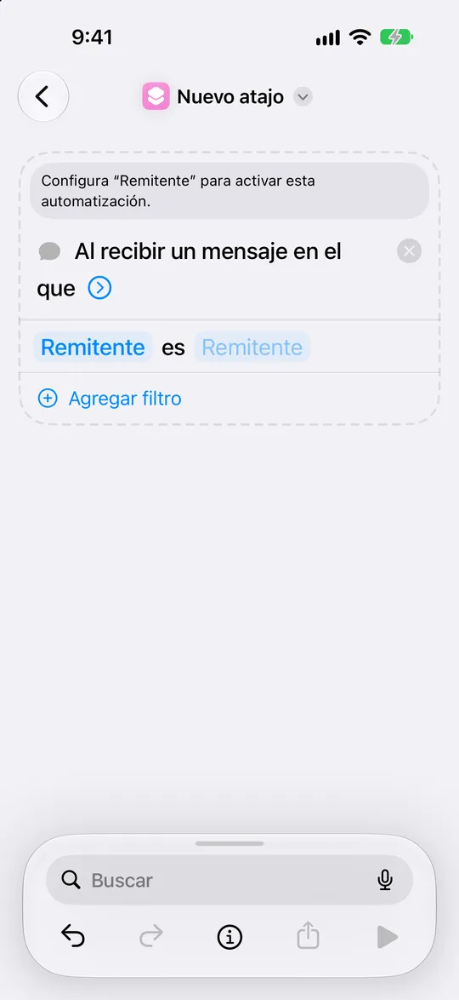
Filtra por el texto del mensaje
Elige “Mensaje” en el menú. La condición queda como “Mensaje contiene Texto”.
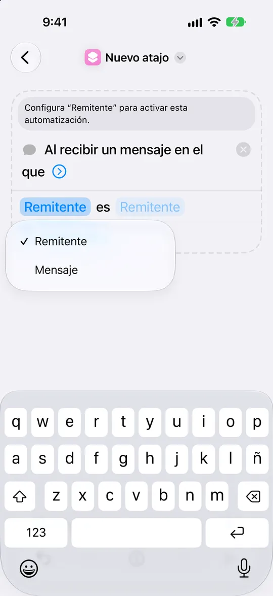
Usa las palabras de tu banco
Toca “Texto” y escribe algo que traigan todos los avisos de tu banco, como el símbolo “$”. Luego toca la flecha azul del activador.
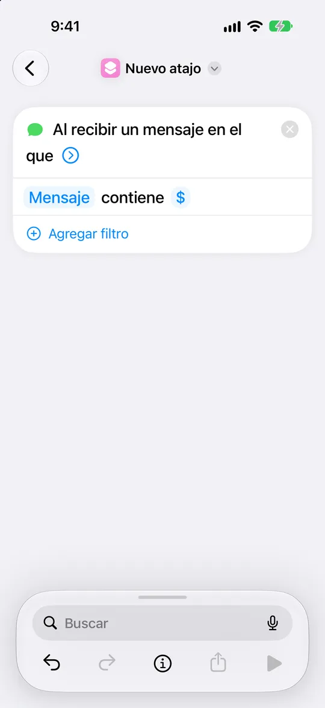
Deja que se ejecute sola
Deja “Automatización” activada y “Confirmar antes de ejecutar” desactivado. Estos reemplazan la pantalla anterior de “Ejecutar de inmediato”.
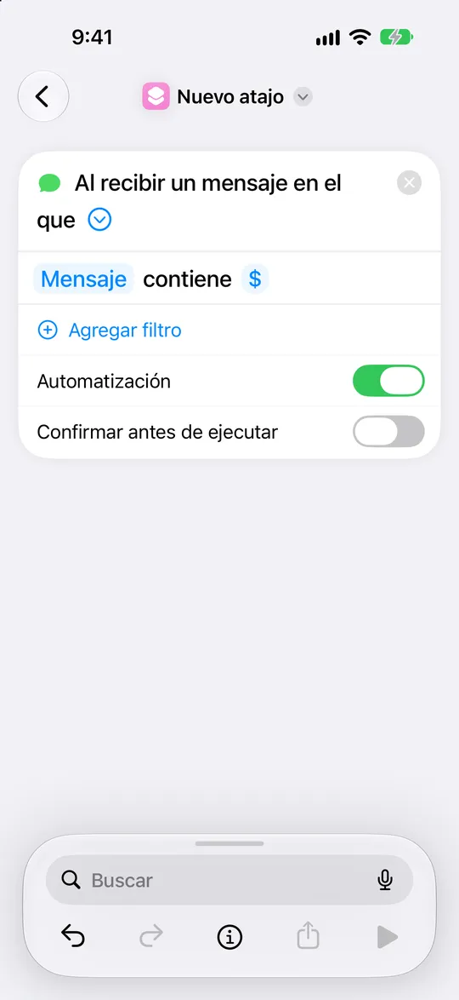
Busca la acción para importar
Toca “Buscar”, escribe “Importar SMS del banco” y selecciona la acción de TrackExpenses.
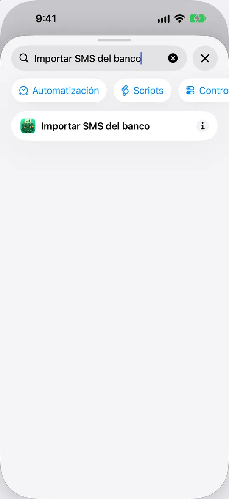
Conecta el texto entrante
Toca el marcador azul “Mensaje” dentro de “Importar movimiento de Mensaje”.
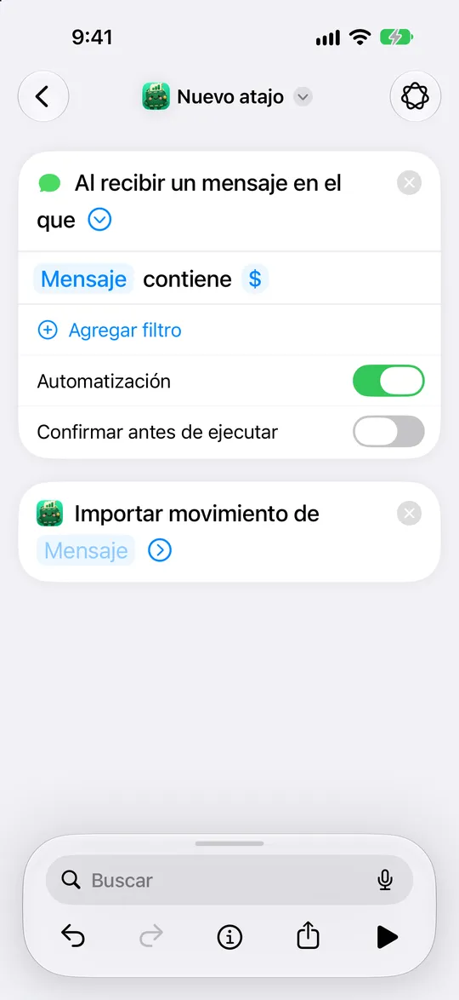
Abre “Seleccionar variable”
Toca “Seleccionar variable” en la barra inferior. No escribas un mensaje ni uses “Preguntar cada vez”.
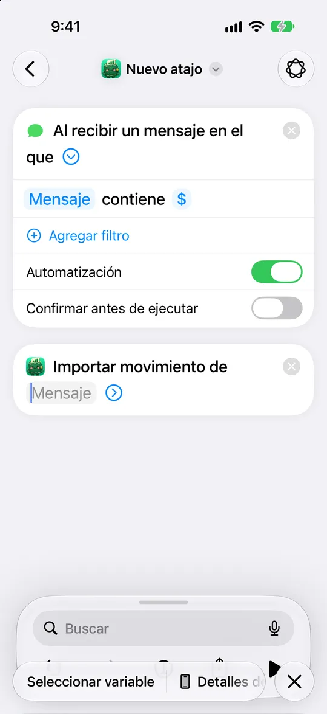
Elige el “Mensaje” del activador
Toca “Mensaje” justo debajo del activador. En iOS 27, esa es la salida del mensaje entrante.
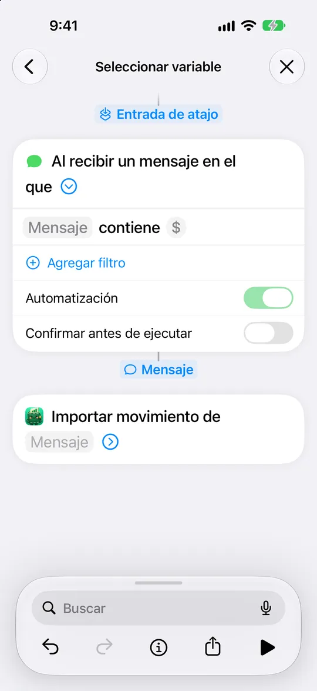
Usa el cuerpo del mensaje
Cierra la barra inferior con ×. Toca la variable “Mensaje” que se insertó para ver sus propiedades.
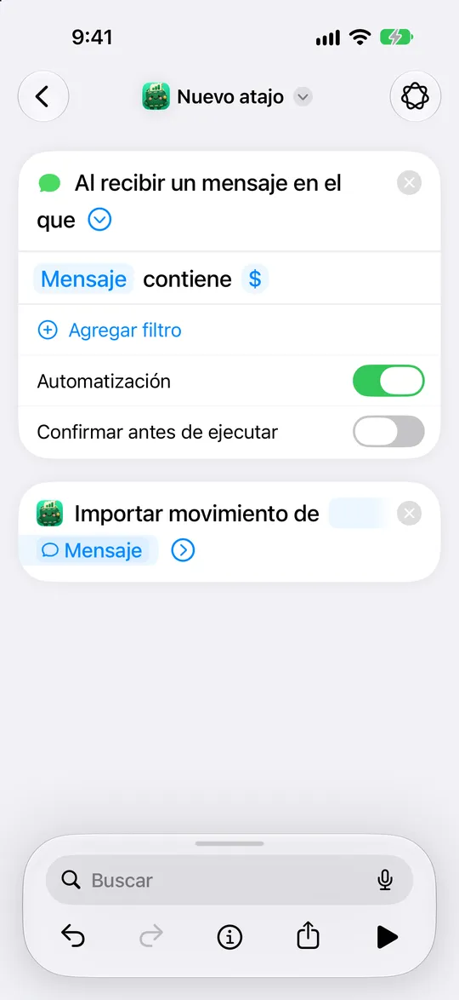
Elige “Contenido”
En la lista “Obtener” de la variable, elige “Contenido”. Toca “Regresar” y luego cierra la barra de variables con ×.
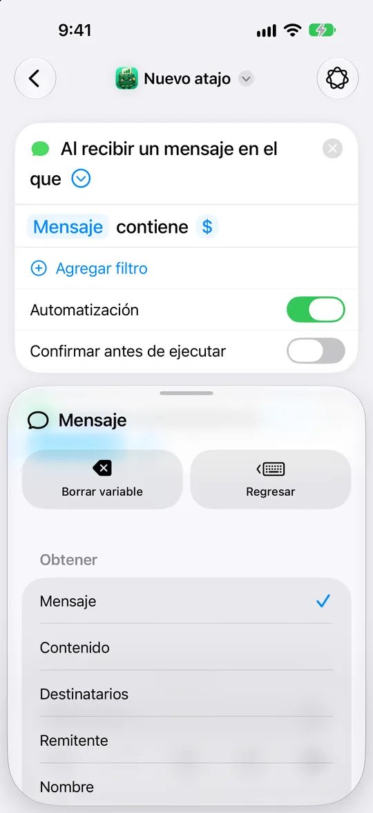
Importaciones sin interrupciones
Abre la flecha azul de la acción para importar y desactiva “Mostrar al ejecutar”. La variable conectada debe decir “Contenido”.
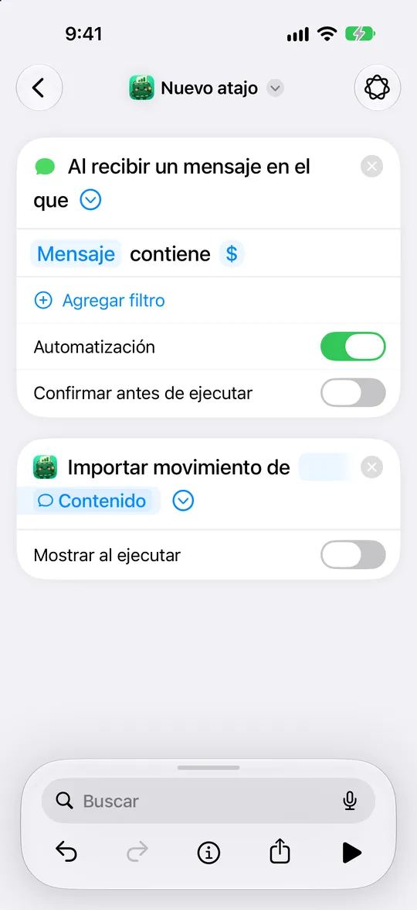
Revisa la privacidad del atajo
Toca el botón ⓘ en la barra del editor y luego abre “Privacidad”.
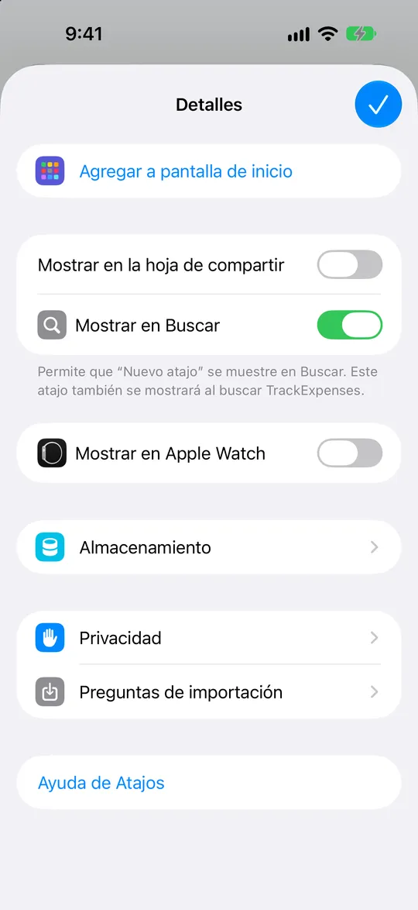
Permítelo con el dispositivo bloqueado
Deja activado “Permitir ejecución en dispositivo bloqueado”. Vuelve a “Detalles”, toca “Listo” y luego regresa para guardar el atajo.
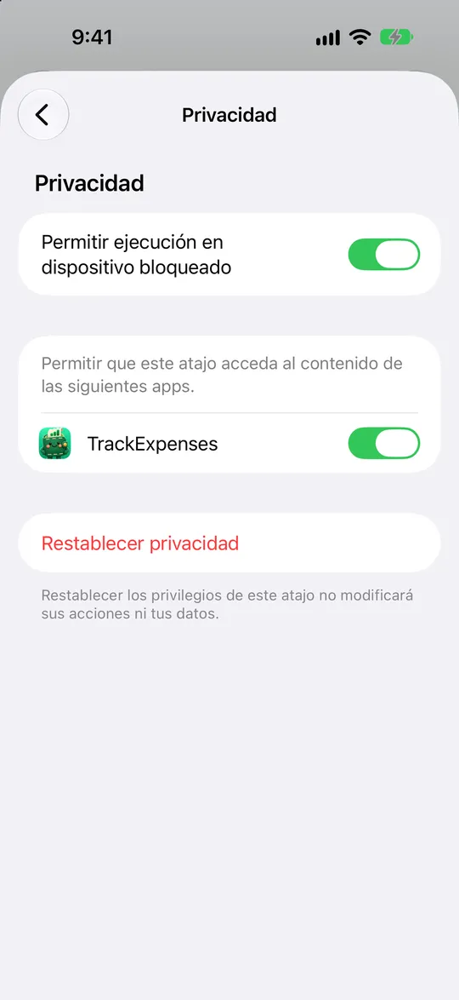
Listo para tu próximo SMS del banco
Confirma que la automatización esté activada. Revisa el próximo aviso que coincida en TrackExpenses → “Más” → “Registro automático de SMS”.
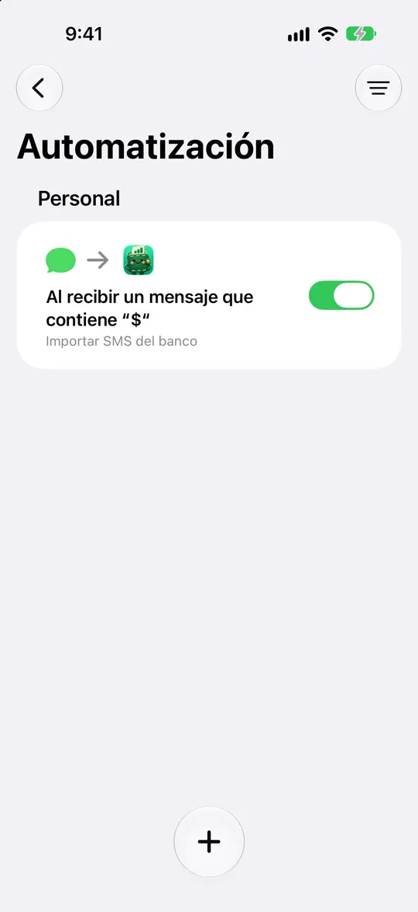
Qué pasa después
Cuando llega un SMS que coincide, TrackExpenses lee el monto, el comercio, la fecha y la tarjeta. El movimiento va a la cuenta que tiene la tarjeta con esos últimos dígitos y toma la categoría de lo que la app aprendió de tus movimientos anteriores. Lo que conviene revisar aparece en una tarjeta arriba de la lista del día.
- Los códigos de verificación, las compras rechazadas, las preguntas como “¿Reconoces esta compra?”, las solicitudes de dinero y las promociones no se registran.
- Las devoluciones y las compras canceladas tampoco se registran solas: pégalas para revisarlas tú.
- El sueldo y otros depósitos se registran como ingreso y quedan marcados para revisar. Lo apagas con el interruptor “Importar el dinero que entra”.
- Una compra en otra moneda sin tipo de cambio guardado espera a que lo pongas, para que no entre a tus totales con un tipo equivocado.
- iOS muestra su propio aviso cada vez que se ejecuta la automatización. Es una regla de Apple que ninguna app puede quitar.
10 importaciones exitosas al mes son gratis en cada dispositivo. Lo que llega después se guarda fuera de tus totales y no se pierde: Pro lo agrega todo; si no, el límite gratis del mes siguiente libera lo que alcance.
Si un aviso no se registró
- Abre “Más” → “Registro automático de SMS” y pega el mensaje en la tarjeta “Prueba con un SMS de tu banco”. Verás al momento si se pudo leer y, si no, por qué.
- Revisa que la automatización esté activada y que “Confirmar antes de ejecutar” esté desactivado.
- Revisa que la variable de la acción sea el “Mensaje” del activador y que diga “Contenido” (pasos 10 a 15).
- Revisa que la palabra del filtro esté escrita igual que en los avisos de tu banco.
Un aviso que no se registró siempre puedes copiarlo y pegarlo en un gasto nuevo.
Privacidad
TrackExpenses no lee tus mensajes: iOS no se lo permite a ninguna app. La automatización que configuraste le pasa solo el texto del mensaje que coincide, y ese texto se lee en tu iPhone. En tus movimientos se guarda lo que se leyó (monto, comercio, fecha), no el texto del SMS. No hay conexión con tu banco ni cuenta en la app.
Preguntas frecuentes
¿La app lee todos mis mensajes?
No. Solo recibe los mensajes que contienen el texto que elegiste en la automatización. Tú la creas y puedes apagarla o eliminarla en Atajos cuando quieras.
¿Entiende los avisos de bancos de mi país?
Lee avisos de bancos y billeteras de México, Colombia, Argentina, Chile y Perú, con los montos como los escribe cada banco. No se puede garantizar para todos los bancos, así que prueba primero un aviso tuyo en la tarjeta “Prueba con un SMS de tu banco”.
¿Cuántos avisos registra gratis?
10 importaciones exitosas al mes en cada dispositivo. Los que pasan del límite se guardan y no se borran: Pro los agrega todos; si no, el límite gratis del mes siguiente libera los que alcance.
Más información
Registra los avisos que llegan por correo
TrackExpenses en español: todas las funciones
En inglés:
- SMS Auto-Import Setup: iOS 27 and 26
- Fix Bank SMS Automation on iPhone
- Track Apple Pay Purchases on iPhone
Tu dinero, más fácil de seguir.
Control de Gastos por Voz, para iPhone, iPad y Mac.
5.0 de 5 en el App Store · 8 calificaciones en 5 países · Datos del 20/11/2026
Datos de la app: qué es gratis y qué agrega Pro
Control de Gastos por Voz (TrackExpenses) es una app de Mohamed Elatabany para iPhone y iPad con iOS/iPadOS 17 o posterior, y para Mac con chip de Apple. Está en español para Latinoamérica, inglés, árabe con el diseño completo de derecha a izquierda, alemán y portugués de Brasil. No necesita cuenta en la app ni acceso a tu banco. Puedes pegar el aviso de tu banco (un SMS, un correo o el detalle de un movimiento que la app de tu banco te deje copiar) y el monto, el comercio, la fecha y la tarjeta se llenan solos; automatizaciones opcionales de Atajos registran los avisos que llegan por SMS o por correo (con la app Mail, también los de Gmail) y las compras con Apple Pay. La app no lee tus mensajes ni tu correo. Una notificación no se puede copiar y ninguna automatización del iPhone puede leer las notificaciones de otra app, así que una compra que solo llega como notificación se registra por voz o a mano. Los códigos de verificación, las compras rechazadas y las preguntas como “¿Reconoces esta compra?” no se registran. El registro por voz funciona en el propio dispositivo, en los modelos e idiomas compatibles, y crea borradores: varias compras caben en una frase y en la pantalla de escucha eliges el idioma en que hablas. Al mantener presionado el ícono de la app aparecen “Dictar un gasto”, “Nuevo gasto”, “Pegar SMS del banco” y “Pregúntale a tu coach”. Gratis tienes movimientos manuales ilimitados, presupuestos, mover dinero entre presupuestos en el periodo actual y cubrir lo que te pasaste sin cambiar el total, días restantes y montos gastados y disponibles, alertas de presupuesto (al 80% si vas más rápido de lo planeado y cuando un presupuesto se excede), recordatorios de pagos a las 9:00 del día anterior, estadísticas, una búsqueda que suma lo gastado y lo recibido en todos los periodos, sincronización con tu iCloud privado en iPhone, iPad y Mac, 3 cuentas, 2 movimientos recurrentes, 10 registros por voz guardados y 10 importaciones automáticas exitosas de avisos del banco por mes calendario en cada dispositivo. El coach financiero lee tu último mes de presupuesto y sugiere un límite. Lo que responde con reglas (lo que gastaste hoy, una categoría, tus cuentas o cualquier mes), las gráficas, los archivos y los movimientos que escribes se resuelven en el dispositivo. Las preguntas abiertas van a Claude de Anthropic por un servidor del desarrollador solo si aceptas, con la conversación, un resumen de este mes y del anterior y, si el modelo lo pide, totales de hasta 13 meses o hasta 20 compras con fecha, comercio, categoría y monto; nunca notas, recibos, nombres o números de cuenta ni saldos (10 preguntas gratis al mes en cada dispositivo). Los avisos que pasan del límite gratis se guardan bloqueados fuera de tus totales: Pro los agrega todos; si no, el límite del mes siguiente libera los que alcance. No se pierde nada y tu historial nunca se bloquea, tampoco cuando termina Pro o la prueba gratis. Pro agrega registro por voz, importaciones, cuentas y movimientos recurrentes ilimitados, retos con el coach y más preguntas, el plan del salario, pronósticos, presupuesto diario general, por presupuesto o para las categorías que elijas hasta una fecha dentro del periodo, con los gastos fijos descontados primero, simulaciones, “Exportar y compartir” (toda exportación es Pro desde la versión 1.15.0: CSV de un mes, de un periodo o de todo, y el respaldo completo), importación CSV, respaldo JSON completo con restauración, temas e íconos alternativos. Hay suscripción mensual y anual y un pago único (Vitalicio). Los cálculos salen de tus movimientos y no son asesoría financiera.